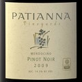

Table of Contents
Uncorked


Pure, Organic and All Fetzer
Two creations from the offspring of a pioneering Mendocino wine couple
Cover: Graeme Montgomery / Trunk Archive
Two creations from the offspring of a pioneering Mendocino wine couple
Cover: Graeme Montgomery / Trunk Archive